CMU Design and Fabrication
CMU Design and Fabrication
Problem Set 7: The Caledonian Conjunx
|
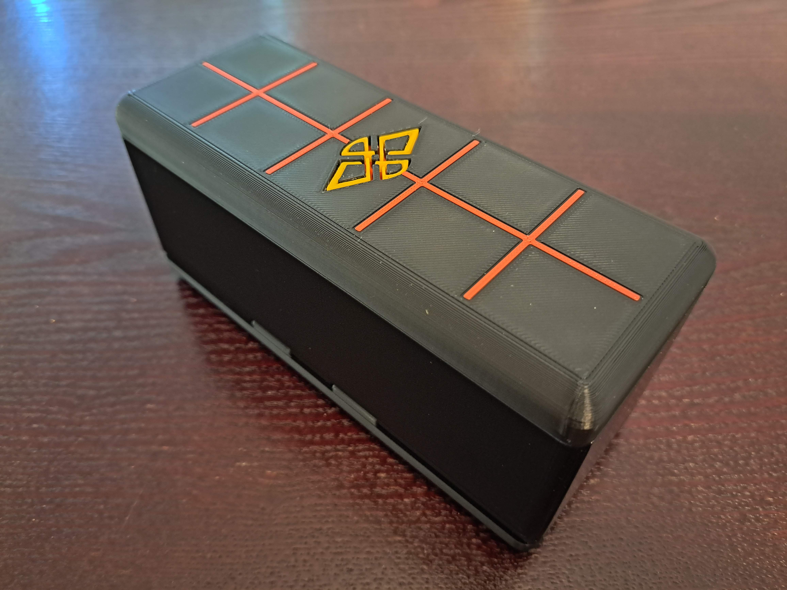 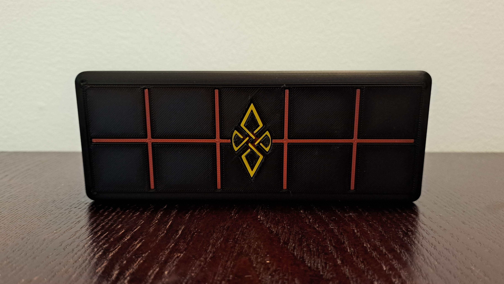 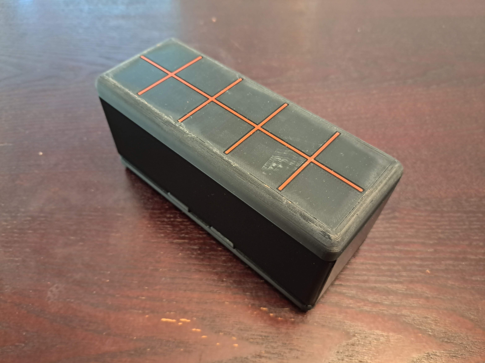 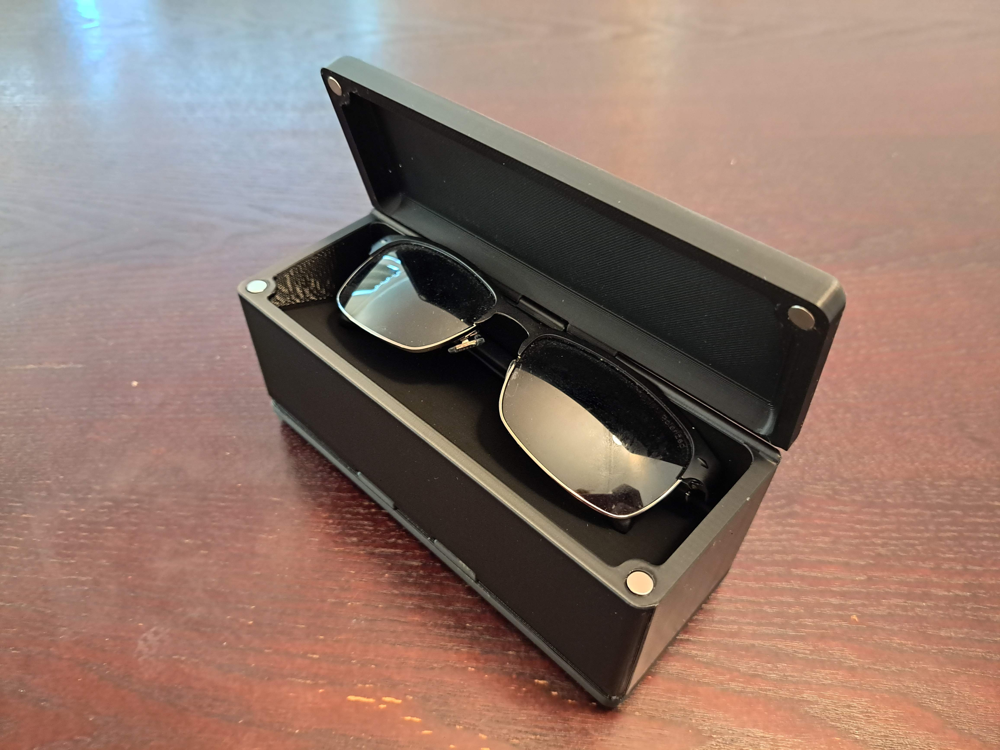 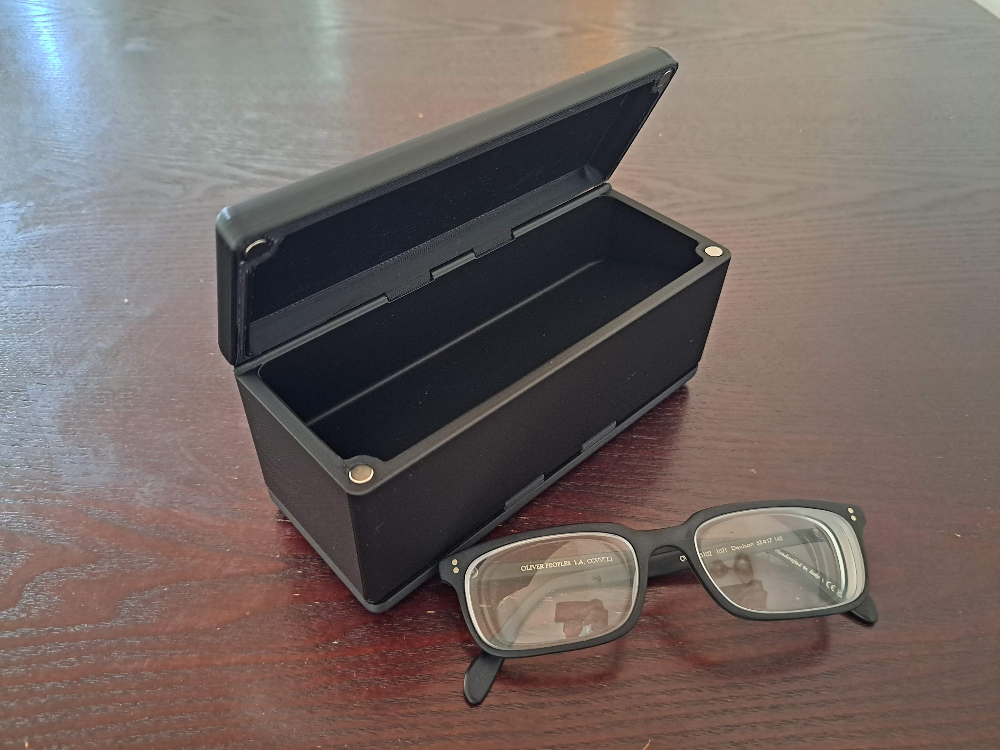 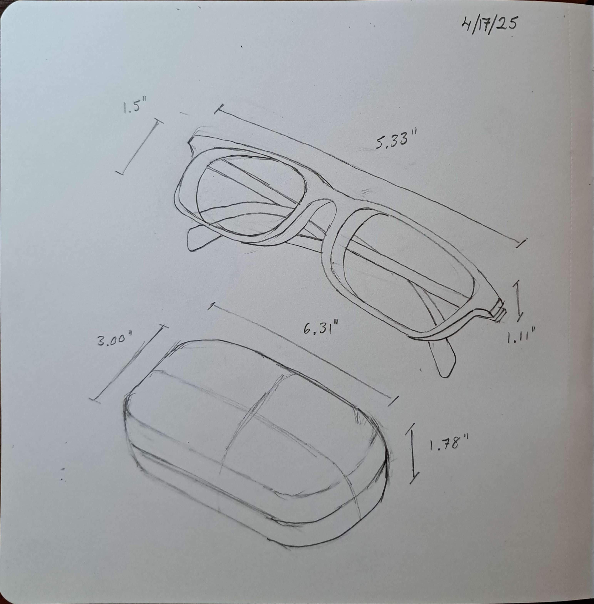 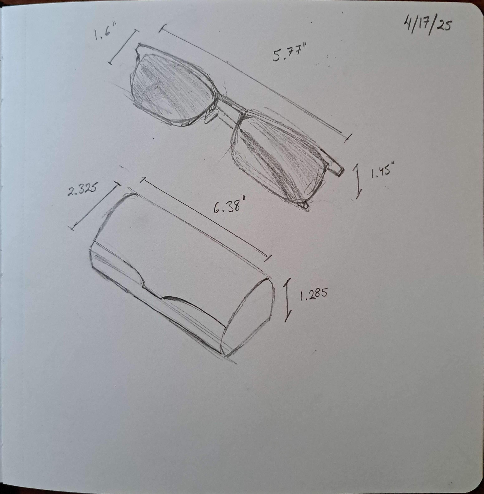 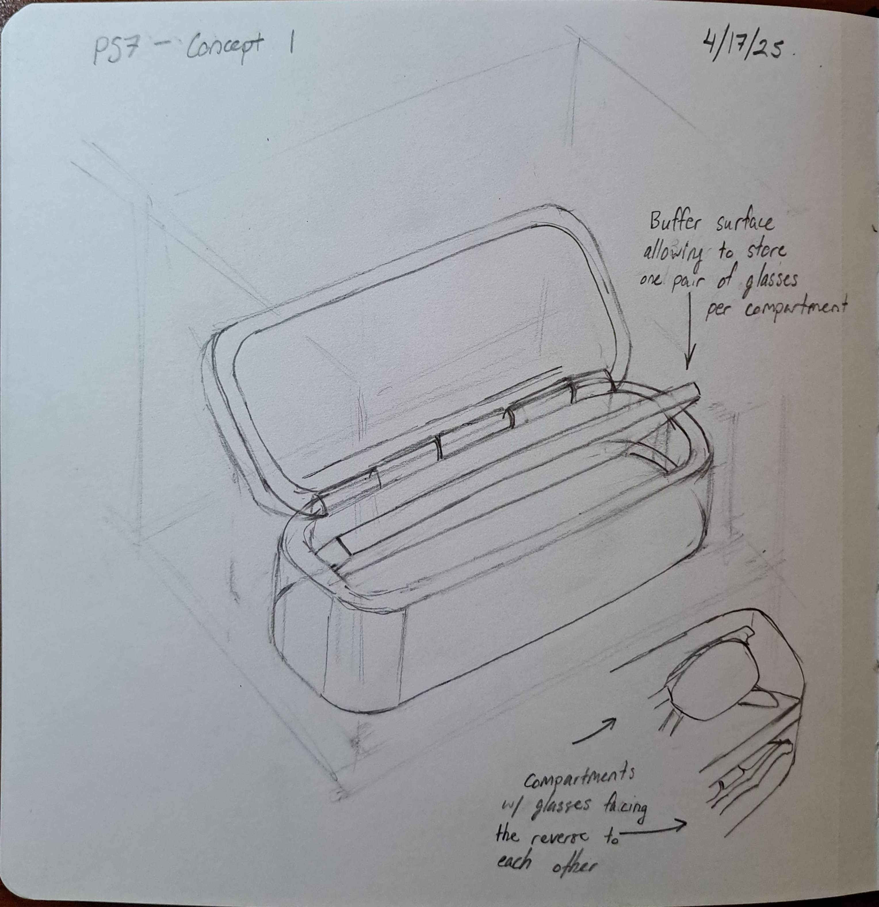 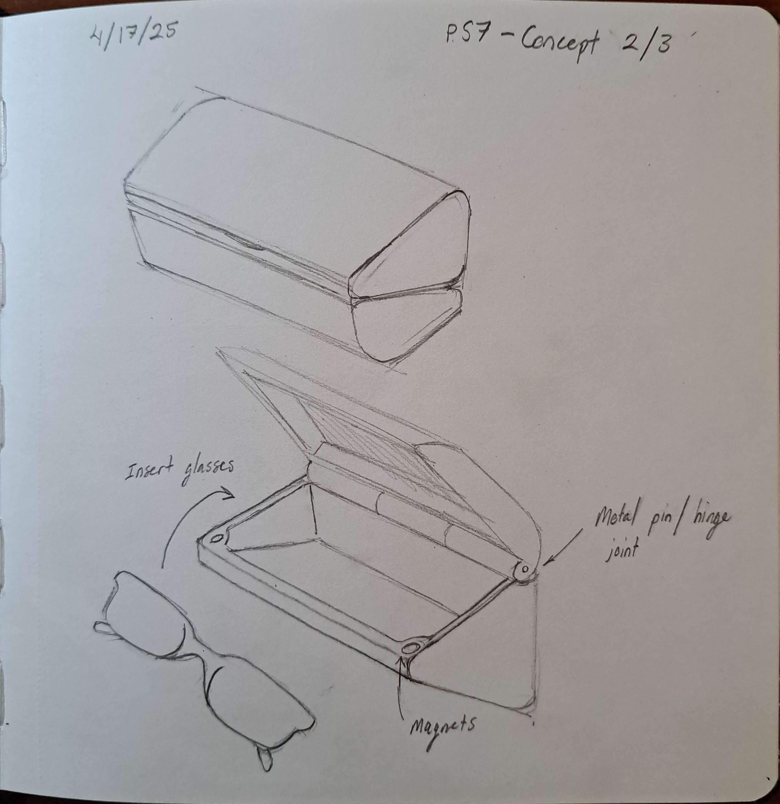 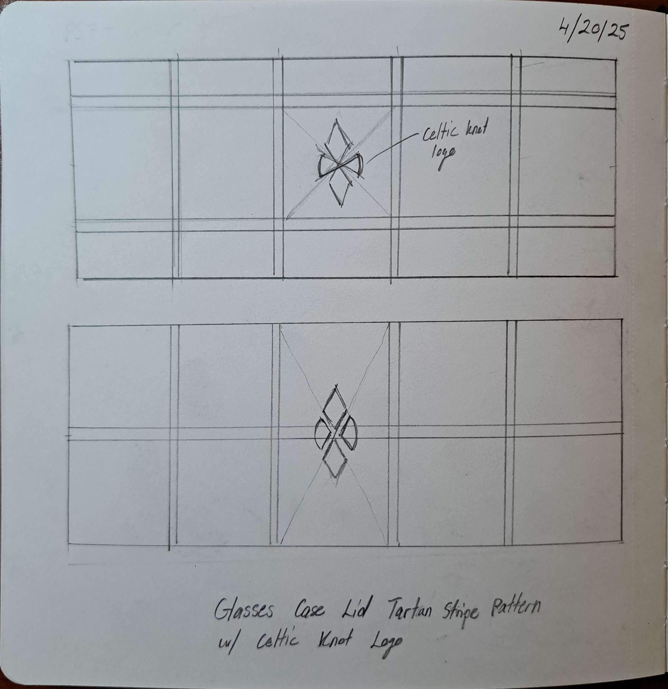 


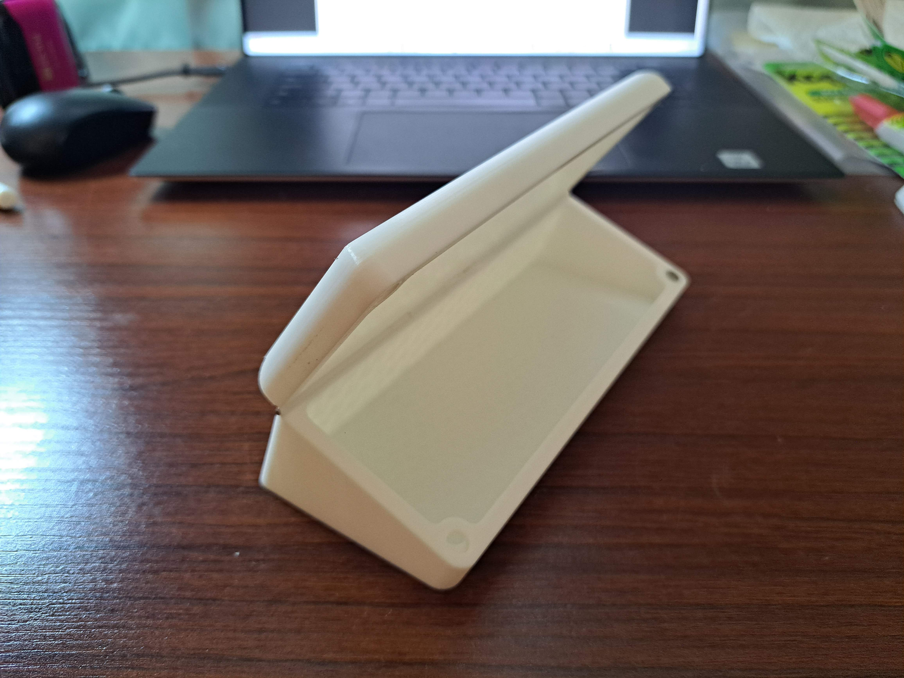 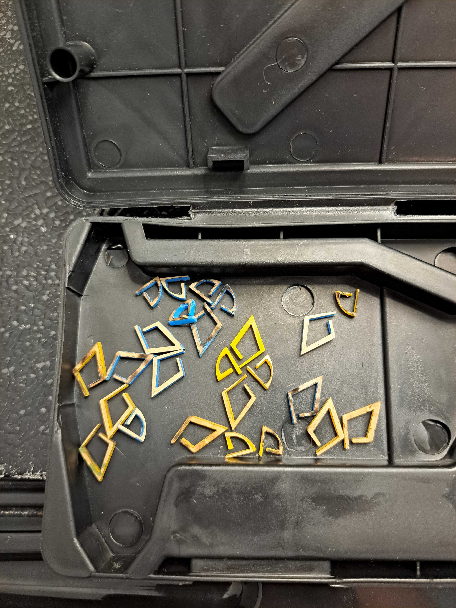 |
Description: As the final project, the task was designing a product of value, functionality, or design. Inspired by the rich heritage of Scotland, The Caledonian Conjunx offers a sophisticated and secure solution for carrying two pairs of your precious eyewear. Whether it's your everyday spectacles and stylish sunglasses, or reading glasses and blue-light blockers, this elegantly designed case ensures they are always protected and within easy reach.
Product Features:
|